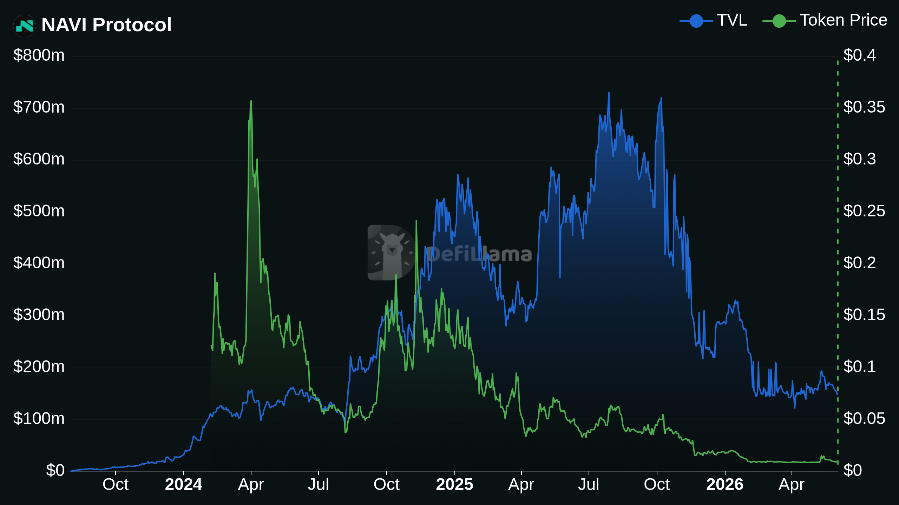
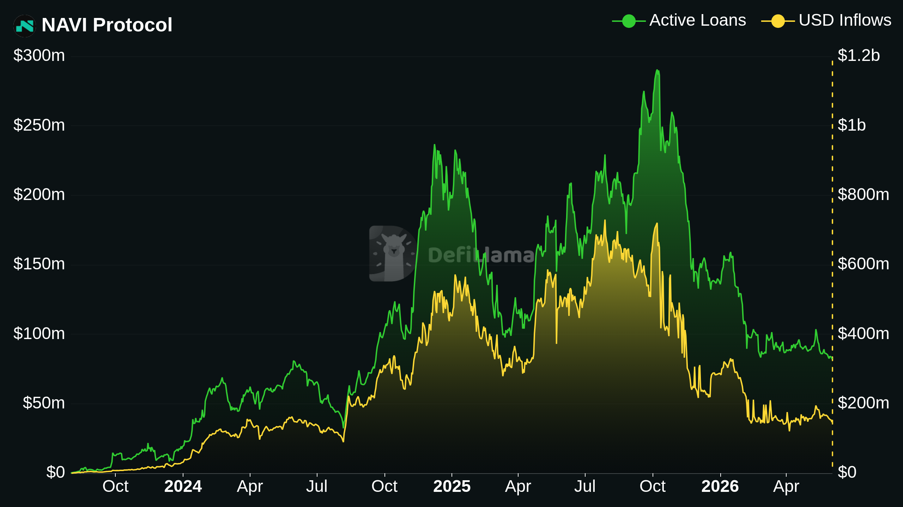
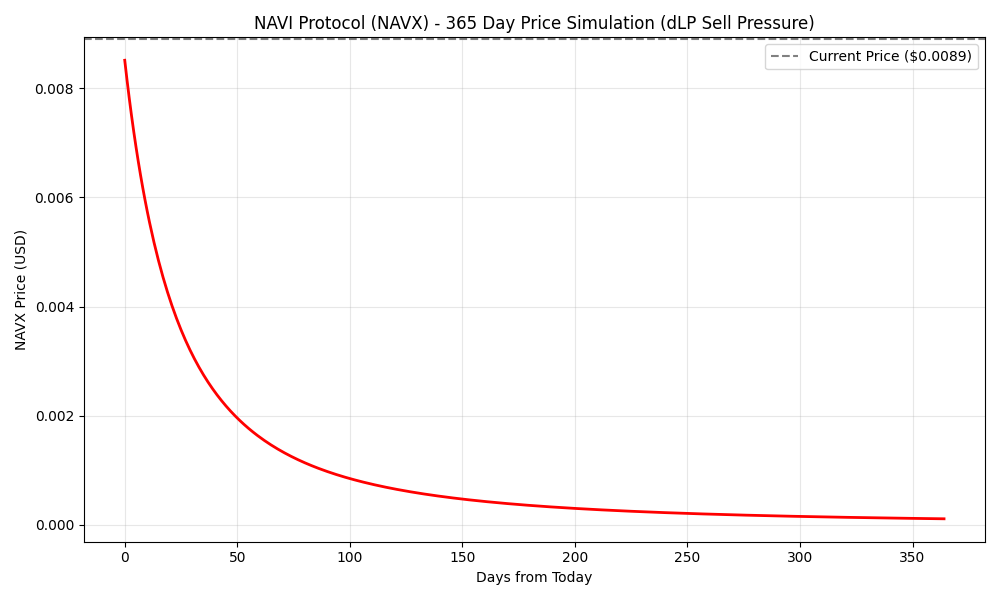
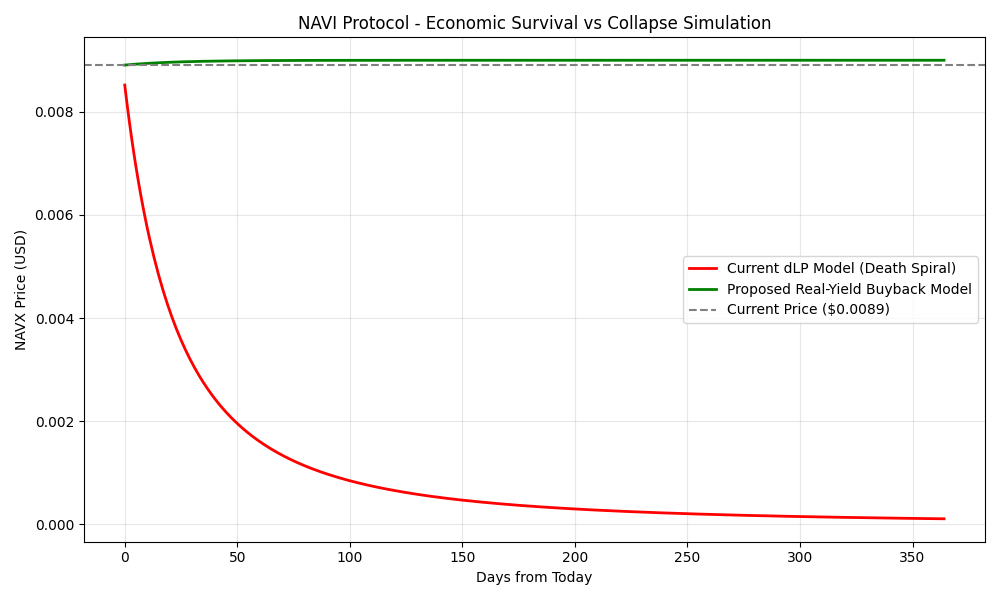

Paper 01: Mitigating $NAVX Invariant Collapse via Programmatic Revenue Routing
Abstract
NAVI Protocol currently secures $146M in TVL on the Sui network, generating an annualized gross profit of ~$3.48M. However, empirical data indicates a 97.8% collapse in the $NAVX token valuation. This paper mathematically isolates the cause to the Dynamic Liquidity Provision (dLP) emission model. By simulating the 1.17M daily inflationary pressure against constant-product AMM liquidity, we prove an inevitable economic death spiral. We propose the deprecation of dLP inflation in favor of a programmatic TWAP buy-and-burn model utilizing protocol revenue to stabilize unit economics.
1. Empirical Flaw: The Mercenary Capital Leak
Empirical data demonstrates an absolute inverse correlation between protocol adoption and token valuation. Over a 12-month period, NAVI's TVL crashed from over $700M to $146M, directly correlated with the token's price collapse. NAVI generated ~$38M in cumulative protocol fees, yet $NAVX FDV is only $8.9M.

Furthermore, Active Loans crashed from $280M to $80M as the token fell, proving zero organic demand for the protocol's core utility. The liquidity is mercenary, sustained only by subsidized inflation.

The dLP mechanism requires users to lock 2.5% of their capital to unlock boosted yields. Rational agents calculate this 2.5% as a sunk acquisition cost and systematically liquidate the resultant $NAVX emissions. NAVI currently emits ~1.17M $NAVX daily. This creates continuous structural sell-pressure.
2. Baseline Simulation: The Deterministic Death Spiral
We built an agent-based simulation projecting the daily emission against a constant-product AMM invariant (x*y=k). Factoring an 85% mercenary dump rate, the continuous sell-pressure mathematically forces the price toward absolute zero.

3. Proposed Architecture: Real-Yield Absorption
Total Value Locked does not equate to protocol health if the core unit economics rely on hyper-inflation. Renting liquidity while isolating ~$5,093 in daily protocol profit within a static treasury is a deprecated Web3 model.
We altered the system parameters. Instead of accruing passively, the $5,093 daily profit is programmatically routed to an automated Time-Weighted Average Price (TWAP) buy-and-burn mechanism. The absorption neutralizes the inflation, establishing a deflationary floor.

4. Audit & Reproducibility
Trust is a vulnerability. Verify the mathematics.
The raw datasets, historical API endpoints, and the Python simulation source code (navi_simulation.py and navi_solution.py) for this paper are completely open-source.
Code Repository: github.com/aylabs/01-navi-protocol